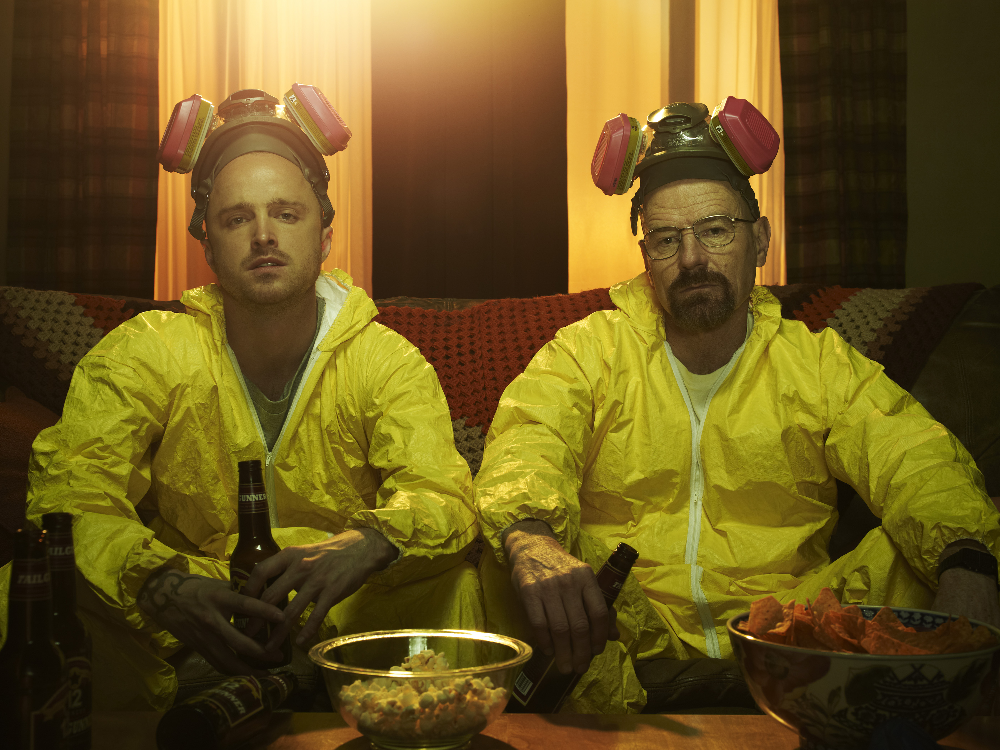

Top 1Breaking Bad
Série de drama criminal.
Um drama criminal sobre um professor de química que entra em um mundo perigoso de escolhas cada vez mais pesadas. A série trabalha tensão, consequência e transformação de personagem com muito cuidado.